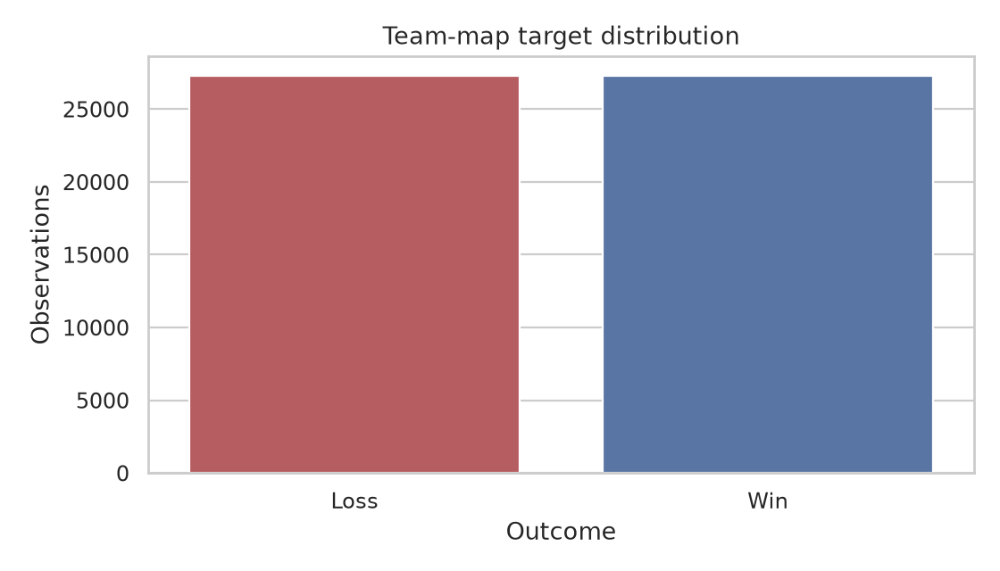
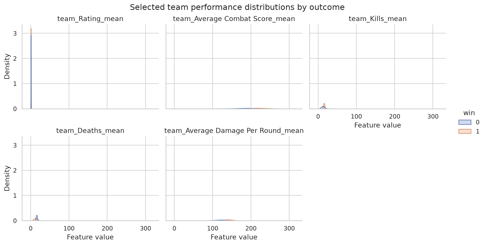
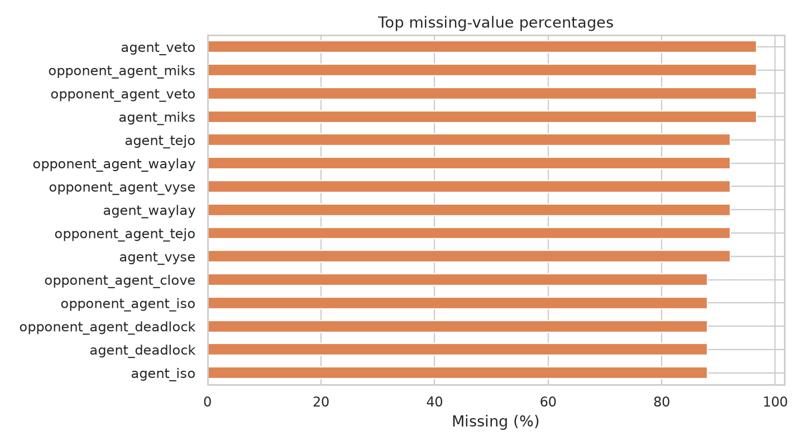
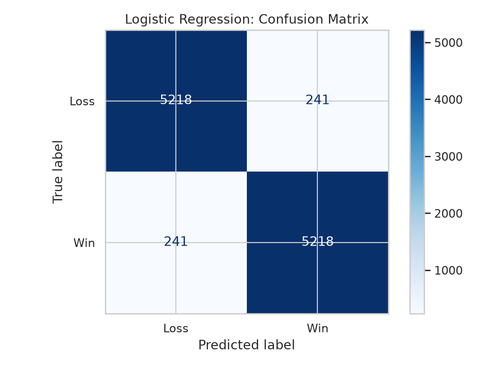

Post-match Map Outcome Classification
Recorded team statistics include:
Scope: classify the winner after the map is complete.
Create clean team-map observations from full-map player records.
Compare two supervised classifiers under match-disjoint validation.
Principle: linear decision boundary with regularized probabilities
Advantage: simple and interpretable
Principle: ensemble of decision trees
Advantage: captures nonlinear interactions
Task: supervised binary classification · `win` = 1, `loss` = 0
Both models are implemented in scikit-learn and tuned by F1-score.


Winning and losing team distributions for selected performance statistics.
Corrected predictor matrix: 119 columns · 113 numeric · 5 categorical in script audit.
The remaining predictor partition includes one additional numeric/other field not represented by this simple two-group count.
10,904–10,908 validation rows
2,512–2,543 validation matches
Every fold has zero train/validation Match ID overlap.

IQR extremes were audited, not removed as errors.
| Model | Accuracy | Precision | Recall | F1 | AUC |
|---|---|---|---|---|---|
| Logistic Regression | .9560 | .9560 | .9560 | .9560 | .9918 |
| Random Forest | .9537 | .9535 | .9540 | .9538 | .9922 |
CV F1: Logistic .9584 ± .0026 · Random Forest .9558 ± .0028
Interpretation: Logistic Regression improves held-out accuracy/F1 by 0.23 percentage points. Random Forest improves ROC-AUC by 0.04 points.

480 errors from 10,918 test observations.
Historical baseline: the 126-column identifier-inclusive run is preserved only for comparison, not as final evidence.